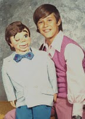

Lightup Bow Tie
6/5/2010
Question: I recently got one of your figures made in the early '70's. He is a work of art! How did the light up bow tie work? All that is left is two snipped wires. Did they go to a switch on the headstick? Thanks for any light you can shed on this (no pun intended!)
* * * * *
Answer: The light up bow tie had two wires that went to an ordinary "D" battery. As I recall, the end of one wire was actually soldered to the bottom of the battery. The bare end of the other wire attached to a metal spring taped to the side of the battery. With your finger, you would bend the spring over to touch against the top (positive end) of the battery and the lights would light. Crude, but it worked! If you'll go to my Photo Album of Clinton Detweiler figures from 1969-1974 you will see several figures that are wearing a version of the lightup bow tie, including the one in this photo.
* * * * *
{kind=link}

Answer: The light up bow tie had two wires that went to an ordinary "D" battery. As I recall, the end of one wire was actually soldered to the bottom of the battery. The bare end of the other wire attached to a metal spring taped to the side of the battery. With your finger, you would bend the spring over to touch against the top (positive end) of the battery and the lights would light. Crude, but it worked! If you'll go to my Photo Album of Clinton Detweiler figures from 1969-1974 you will see several figures that are wearing a version of the lightup bow tie, including the one in this photo.